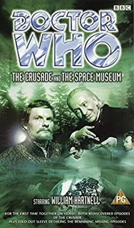
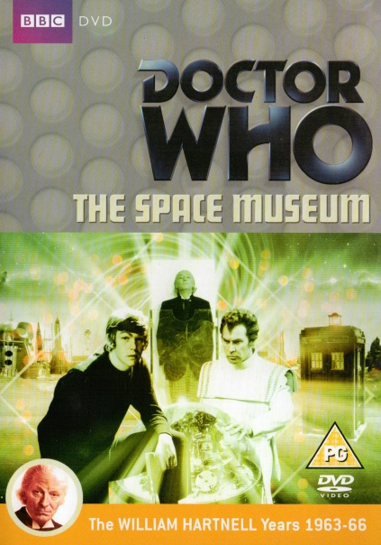
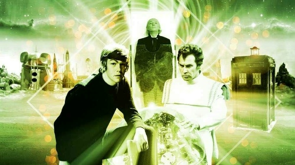
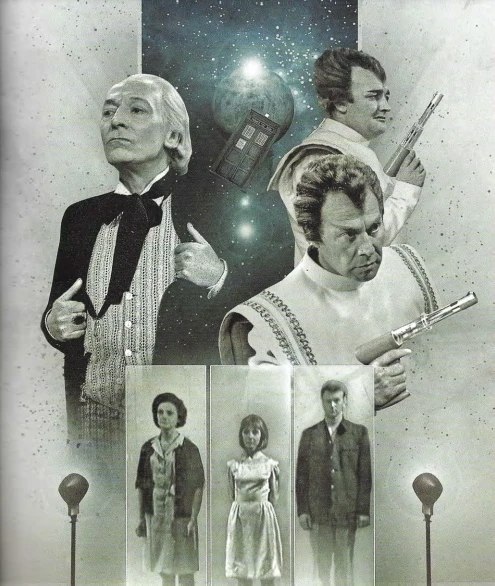

Эра Первого Доктора (2 сезон)
<<< НАЗАД ||| 7. Космический музей ||| ДАЛЬШЕ >>>
Субтитры: Русские и Английские |  |
|---|
24 апреля - 15 мая 1965
4 эпизода по 25 мин.
| 1. Космический музей 2. Измерения времени 3. Поиск 4. Конечная стадия | Сохранились - 16mm t/r |
|---|
 |  |  |
«Космический музей» переносит команду на планету Ксерос, где в залах музея они видят собственные будущие останки — это ставит героев перед пугающей неизбежностью. Доктор ищет способ переписать предначертанное, балансируя между знанием и действием. Противостояние с империей Морок раскрывает цену вмешательства во время: даже намёк на изменение судьбы запускает цепную реакцию. Серия мастерски играет с идеей предопределённости и делает саму историю главным антагонистом.
 VHS - июль 1999 |   DVD+Boxset - 1 марта 2010 |  Blu-ray - 5 декабря 2022 * Версия в нашей группе |
|---|




